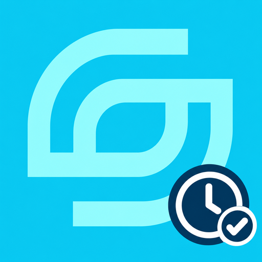

JORNADA
Instala Jornada en tu pantalla de inicio para abrirla como una app, con su propio icono.
- Toca el icono de compartir ⬆️ en la barra de Safari.
- Elige "Añadir a pantalla de inicio".
- Confirma arriba a la derecha.
- Abre el menú del navegador (⋮ o •••).
- Toca "Instalar aplicación" o "Añadir a pantalla de inicio".
Abrir sin instalar
← Volver a Savian Apps